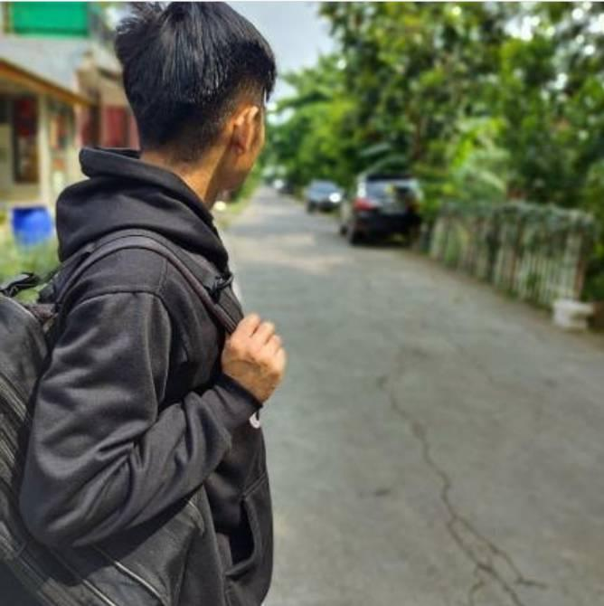
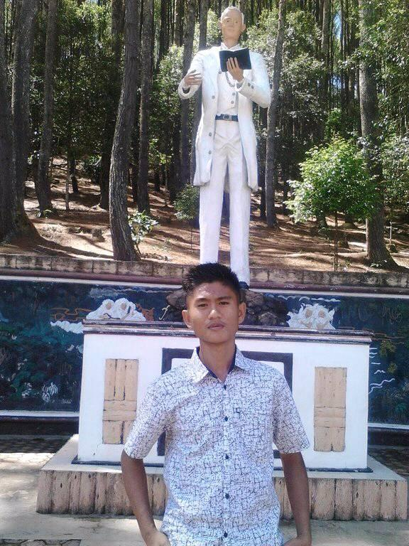
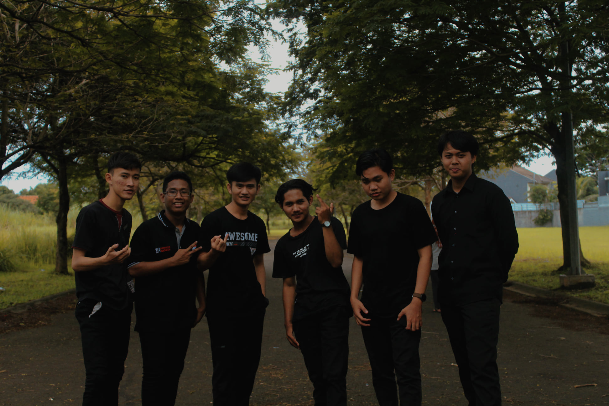
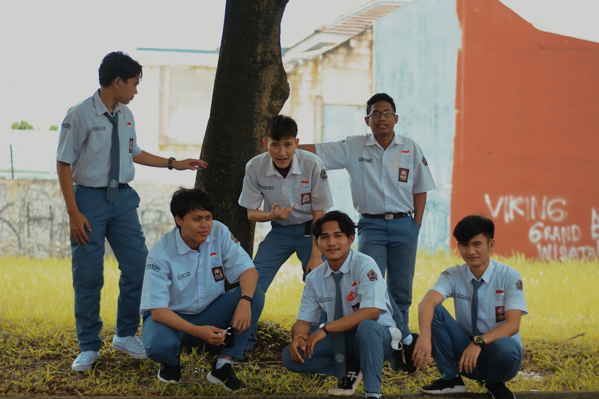
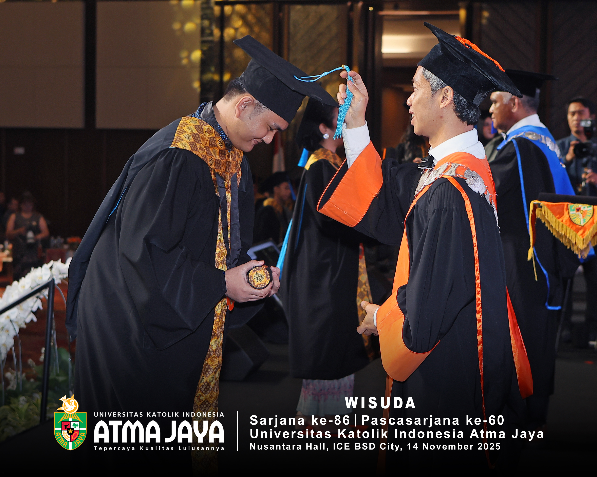

About Me
I am a graduate of Primary School Education (PGSD) from Atma Jaya Catholic University of Indonesia. Throughout my career, I have cultivated a strong foundation in event management, operational support, and education. Currently, I work with PT Atma Jaya Mitra Nusantara in operational and event support roles, where I ensure smooth logistics and successful execution of varied events.
My background in education drives my passion for teaching literacy and numeracy to elementary school students. Outside of standard academics, I am highly creative—I teach acoustic guitar privately and utilize graphic design skills to enhance communication and engagement in all my projects.

Born in 2002
I was born into a modest family in an area called Kalangan, Pandan District, Central Tapanuli Regency, North Sumatra. I was born on Saturday, December 14, 2002.
According to my parents' story, when the day of my birth arrived, we were still living in the house of Mr. Talu Gadang—a figure who was very close to our family. He patiently watched over my mother and taught my father how to calm her down before the delivery process.
Interestingly, on that day, Mr. Talu Gadang said, “It seems like today is not the day,” and then he went fishing alone. However, it was on that very day that I was born. Although he felt a little upset that he was not there when I was born, he never regretted it. As a sign of respect, his name was immortalized in my name, “Saba Ati,” which is part of my full name.
Originally, my name was Sabar Zebua. However, Uncle Sa'a (his name is Ama Popi) later added the name “Aksi” in front of my name. Since then, I have been known as Aksi Sabar Zebua—a name that holds family stories, togetherness, and deep meaning.
Elementary school years 2009-2015
In 2005, our family moved to Muara Sibuntuon, a village quite far from the city center. At that time, the surrounding environment was still very natural—full of trees and forests. Initially, we lived in the house of Bou, my father's older brother. Soon after, we rented a house located right in front of Bou's house.
Some time later, my father bought a plot of land by the river and built a simple house there. That's how we began to settle independently in the village.
In 2008, when I was six years old, I started elementary school at SD Negeri 155688 Muara Sibuntuon. When I started school, I was not a smart child, especially when it came to reading. I was not yet fluent in reading at the beginning of elementary school. However, I excelled in mathematics. Somehow, even though my reading skills were still limited, I was able to move up a grade every year—albeit with mediocre grades.
A major change occurred when I was in fourth grade. My homeroom teacher at the time, Ms. Rida, was known for being strict and fierce. However, it was from her that I learned a lot. She taught me to read using memorization and intensive practice. Thanks to her guidance, by the first semester of fourth grade, I was finally able to read fluently. From then on, my grades began to improve rapidly—from being at the bottom of the class, I managed to break into the top 10.
In fifth grade, I was able to achieve a ranking in the top 5. Then in sixth grade, I managed to become number 1 until I graduated. Many people couldn't believe my transformation, considering I wasn't an outstanding student at first. However, through this experience, I learned that passion, perseverance, and a desire to learn can overcome initial limitations. I graduated from elementary school with very satisfactory grades, and that became one of the important milestones in my life journey.


Junior High School Period 2015-2018
After graduating from elementary school, I continued my education at Sibabangun 4 Public Junior High School, formerly known as Sibabangun 1 Atap Junior High School. The school changed its name just as I entered 7th grade. The junior high school was located in the same area as my former elementary school—just in a different building. The school was relatively new, and I was part of its fifth batch of students since its establishment.
My junior high school years were a very enjoyable time for me, although they were not without challenges. When I was in 7th grade, I took the plunge and ran for class president. It turned out that many of my friends trusted me with their votes, and I was elected. I was very happy at that time because I was able to learn how to lead and manage my classmates, while also establishing good cooperation with them.
I was also often entrusted to replace the student council president in leading the morning assembly at school. Although I was sometimes teased because I couldn't pronounce the letter “R” correctly, I wasn't embarrassed. Instead, I used it as motivation to continue learning and remain confident. Many teachers considered me a good leader.
In 8th grade, I was re-elected as class president. I always tried to create a comfortable classroom atmosphere for both teachers and friends. Academically, I consistently ranked in the top 5, which was a source of pride for me. In the same year, I also participated in the Central Tapanuli Regency Mathematics Science Olympiad and won 3rd place—a very meaningful achievement for me at that time.
In 9th grade, I took on a new challenge by running for student council president. Although I was not elected, I have no regrets, because I had the courage to try. I remained active in assisting the Student Council President in various activities, working closely with Ms. Dhian, the Vice Principal for Student Affairs. From this experience, I learned a lot about leadership and responsibility.
Finally, I completed junior high school with a joyful heart and satisfactory academic results. This period became an important foundation in building my confidence and enthusiasm to continue developing.
The Beginning of the Journey to Bekasi (2018)
The year 2018 was a challenging year for me and my family. At that time, continuing my education to the next level felt very difficult due to financial constraints. There were many considerations within the family. I had decided not to continue my studies and was ready to start working to ease my parents' burden.
However, my parents did not approve of this decision. Every day, they prayed that God would provide a way out before I actually graduated. Then one day, my parents remembered that Uncle Sa'a's child was studying in Jakarta. That's when they came up with the idea of visiting Uncle Sa'a and asking if it would be possible for me to continue my studies there.
Upon arriving at Uncle Sa'a's place, he advised me to register at the Sinar Kasih Harapan Orphanage, located in Mustika Jaya, Bekasi City. After going through the administrative process and honestly explaining my family situation, I was finally accepted.
This decision led me on a new journey—moving to Bekasi City, a place I had never been to before. It was very far from my hometown, and this was the first time I had to live away from my parents. Despite this, with a strong determination to continue my education, I was ready to face any challenges that came my way for the sake of my future.


Vocational School Period 2018-2021
During my high school years, I lived at Yayasan Sinar Kasih Harapan, where I learned many important values such as discipline, responsibility, and perseverance. Living in the foundation environment shaped my character and taught me the importance of community, support, and personal growth.
At the same time, I pursued my formal education at SMK Yayasan Tinta Emas Indonesia (YATINDO). During this period, I faced various challenges that helped me grow both academically and personally. Being part of both the foundation and the school environment allowed me to develop independence and a strong work ethic from an early age.
Outside the classroom, I began to explore my interests in creativity and music. I developed my guitar skills and often shared my knowledge with others around me. This experience gradually built my confidence in teaching and communicating with people.
These formative years played an important role in shaping my perspective about education, creativity, and service to others. The experiences I gained during this time later inspired me to pursue higher education in the field of teaching and to continue developing skills in creativity, organization, and leadership.
University Years 2021-2025
My university journey began when I was accepted into Universitas Katolik Indonesia Atma Jaya, where I pursued a Bachelor's degree in Primary School Education (PGSD). During my studies, I developed a deeper understanding of education, particularly in literacy and numeracy for elementary school students. While studying at the university, I actively looked for opportunities to grow beyond academics. I became involved in various activities, including supporting events, creative projects, and organizational work. These experiences helped me develop practical skills such as event coordination, teamwork, and operational management.
University life also taught me resilience and independence. Balancing academic responsibilities with work and personal development required discipline and determination. Through these experiences, I learned how to manage time effectively and continuously improve myself. Outside the classroom, I continued to develop my creative interests, especially in music and design. Teaching acoustic guitar privately and participating in creative projects helped me strengthen my communication skills and build meaningful connections with others.
In 2025, I successfully graduated from Universitas Katolik Indonesia Atma Jaya. One of the most meaningful moments of my journey was when my parents came to Jakarta to attend my graduation. After the ceremony, I had the opportunity to take them around the city and show them Jakarta — a moment that meant a lot to me as a way of expressing my gratitude for their support throughout my journey.


Future Vision 2026 & Beyond
Looking ahead, my goal is to continue growing as a professional in Operational Excellence, Event Management, and Creative Coordination. I aim to develop stronger skills in improving operational systems, managing impactful events, and supporting organizations in creating well-structured and meaningful experiences.
In the coming years, I want to expand my expertise by learning more about process improvement, project coordination, and creative management, while continuing to contribute to teams and organizations that value collaboration, innovation, and efficiency.
Beyond professional growth, I also hope to keep developing my creative interests, particularly in music and design, as these passions help me stay balanced, inspired, and connected with others.
Looking further into the future, my vision is to build a career where I can combine operational excellence, creativity, and leadership to create positive impact in every project and community I am part of.